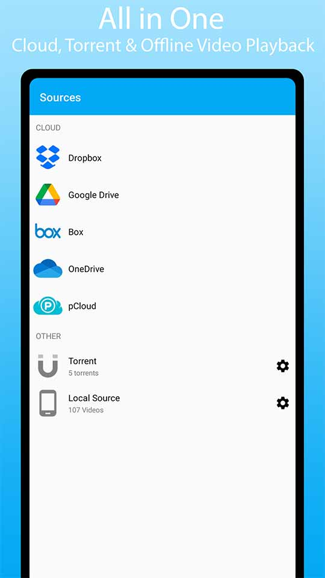
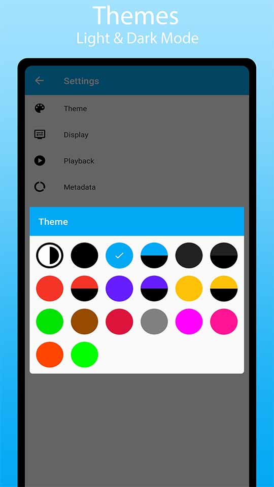
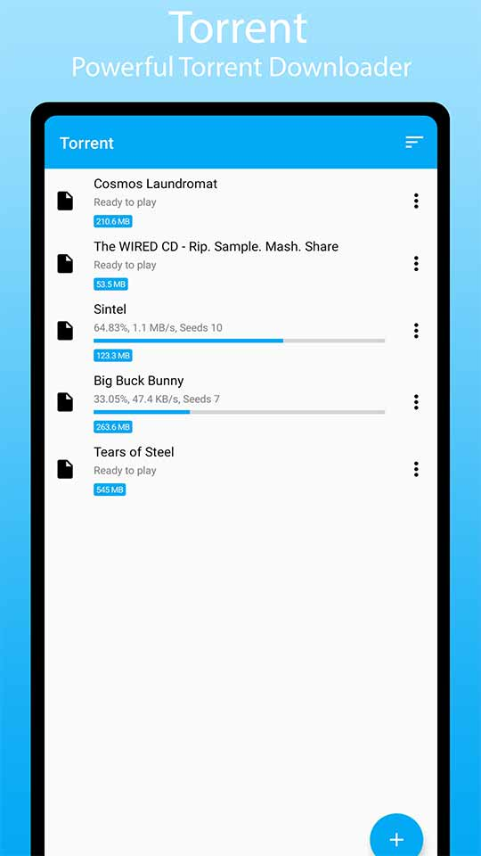

Vot Player
Cloud & Offline Video Player


Vot Player is a cloud & offline video player with tons of customization options and themes. Use it as an offline video player or link your Dropbox, Box, OneDrive, pCloud and Google Drive to stream video directly from it. Vot Player works both offline and online.
FEATURES
• Local and cloud video playback.
• Tons of theme options, including light & dark mode.
• Customize subtitles.
• Background playback.
• Support all the most popular video file formats.
• Support for embedded and external subtitles.
• Support for picture in picture mode.
• Night Mode.
• Bookmark videos.
• Blacklist videos and folders from library.
• Hide files in private files.
• Backup and Restore.
• In-built equalizer with volume boost.
• Repeat all, repeat one and shuffle.
• Adjust Playback speed (Pro feature).
• Sleep timer, Quick search, Easy navigation.
• Customizable span count for grid mode.
• Create playlist from videos and folders.
